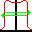
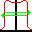

1D Symmetry Ave¶
The point difference (also called maximum variation) is the maximum absolute difference between the left and right profile values at the same distance from the profile or detector centre taken over the in field area (IFA) normalised to the average of the IFA:
\[100 \cdot \cfrac {|P(dL) - P(dR)|} {ave}\]
for dR = -dL from 0 to the the edge of the in field area.
Protocol invocation name: 1D Symmetry Ave
 The point difference symmetry may be affected by the field or detector centre. If the field is slightly offset you can use the Centre field tool  to correct any offset.
The point difference symmetry may be affected by the field or detector centre. If the field is slightly offset you can use the Centre field tool  to correct any offset.